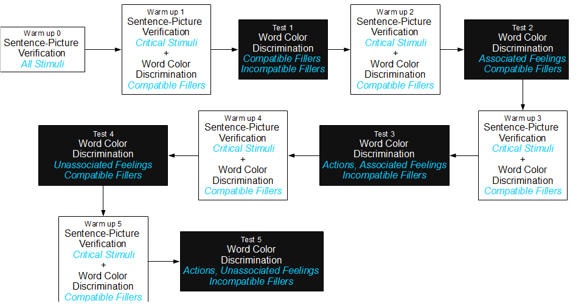
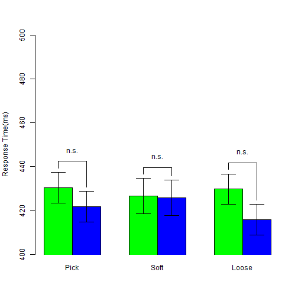
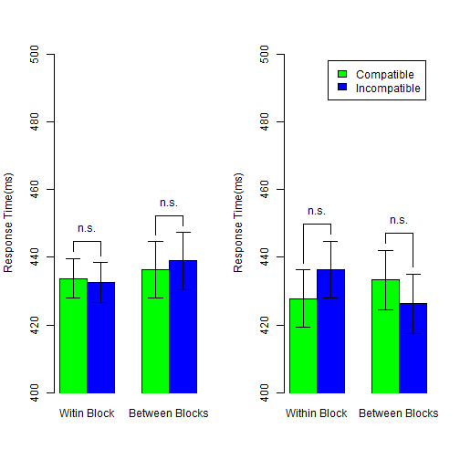

- Why study mental simulation
- How to measure mental simulation
- Experiment and findings
- Reproducibility Check source files
Embodied Simulation Effects
A practice of Reproducible Research
陳紹慶 胡中凡(共同主持人)
慈濟大學人類發展學系 成功大學心理學系
Outline
Why study mental simulation?
Language Comprehension: Two Perspectives
Colorless green ideas sleep furiously.


Embodied Cognition: How many perspectives?
| Shapiro(2010) | Rowlands(2010) | |
|---|---|---|
| Conceptulization | Embodied mind | |
| Replacement | Enacted mind | |
| Constitution | Extended mind, Embeded mind |

How to measure mental simulation?
Measurements
- Sentence-picture verification task
- Matching effect
- Word color discrimination
- Compatibility effect (Simon effect)
Sentence-picture verification: Example
I want to eat the egg in the dish.
Match the picture and bold word in next slide.
Sentence-picture verification: Example

Hardly choose YES?
Is it match?
- YES
- NO
Matching Effects
| Match | Mismatch | |
|---|---|---|
| RT | 697.00 | 761.00 |
| Correct Rate | 97.00 | 93.00 |
Zwaan, Stanfield, & Yaxley (2002)
- Supoort Perceptual Symbol System(Barsalou, 1999)
- Embodied Simulation Hypothesis: "Perceptual symbols are activated after reading sentence"
Matching Effects
- Positive matching effect (Match < Mismatch)
- shape (Zwaan, Stanfield, and Yaxley, 2002)
- orientation (Stanfield & Zwaan, 2001)
- Negative matching effect (Match > Mismatch)
- color (Connell, 2007)
- Replication problem
- Zwaan & Pecher(2012)
- color > shape > orientation
- Thinking
- Sentence-picture verification is a potential tool to inspect language comprehension rather than to inspect embodied cognition
- "... I see embodiment as a means and not as an end." (retrieved from Rolf Zwaan's blog, 2013/1/15)
Could we investigate the implicit processing of mental simulation?
There is no standard paradigm to measure the implicit mental simulation.
Extrinsic Affective Simon Task (EAST; De Houwer, 2003)
- Word meaning classification -> Establish meaning-response compatibility
- Key 1 = Happy Key 2 = Disgust
- Word color discrimination -> Measure compatibity effect
- Key 1 = Color1 Key 2 = Color2
- Word 1 = Happy Word 2 = Disgust
- Compatible Case
- Key 1 ~ Happy Key 2 ~ Disgust
- Incompatible Case
- Key 1 ~ Disgust Key 2 ~ Happy
Original EAST Results
| Word meaning: Happy | Word meaning: Disgust | |
|---|---|---|
| Compatible Response | 660.00 | 636.00 |
| Incompatible Response | 707.00 | 678.00 |
De Houwer(2003), Experiment 1
Modified EAST Design
- Word meaning classification
- ＞＞＞ Sentence-picture Verification
- Build situation in imagination
- Word color discrimination
- Critical words associated actions and feelings
- Actions and feelings matched the situation
- Two measurements
- Matching effect: Sentence-picture Verification
- Compatibility effect: Word color discrimination
Hypothesis
- Embodied Simulation Hypothesis
- People comprehend the linguistic forms of objects as the way people see the objects in the real world (Bergen, 2012).
- see -> move? observe?
- I will take this iron box.
- I will touch this iron box.
Situational Properties
- Actions
- Observe: have not to exhaust strength
- Move: have to exhaust strength
- Objects
- Observed objects generate the feeling about texture
- Moved objects generate the feeling about weight
- Feelings
- Texture
- Weight
Critical Measurements
- Matching effect
- Which constituents in the situation could be explicit to our imagination?
- Compatibility effect
- Which constituents in the situation have the advantage established the implicit association of two unrelated imagination?
Predictions
- Sentence-picture verification task: human mind would simulate the action on the target object and the feeling.
- Matching effect would happen to the pitcure that does not match the probe sentence.
- Word color discrimination task: human mind would process the implicit association of the action and the feeling.
- Compatibility effect would happen to the word represented action or feeling but the color instructed the incompatible response key.
Experiment and findings
Procedure

Sentence-Picture Verification: Stimuli Sentence

Sentence-Picture Verification: Stimuli Picture

Sentence-Picture Verification: Response keys

Word Color Discrimination: Twist-Tight Pick-Soft

Word Color Discrimination: Twist-Loose Pick-Hard

Word Color Discrimination: Response keys

Analysis protocal
- Sentence-picture verification
- Response key sets X Matching
- All trials in warm up blocks
- Word-color discrimination
- Three sets of target words: Blue critical, Green critical, Filler
- Critical words: Word types X Association types X Compatibility
- Filler words: Word types X Test Blocks X Compatibility
Sentence-Picture Verification: Summary


Sentence-Picture Verification: ANOVA
| Df | Sum Sq | Mean Sq | F value | Pr(>F) | |
|---|---|---|---|---|---|
| Series | 1 | 95736.35 | 95736.35 | 2.41 | 0.1290 |
| Residuals | 38 | 1510458.39 | 39748.91 | ||
| Matching | 1 | 10475.54 | 10475.54 | 14.68 | 0.0005 |
| Series:Matching | 1 | 6464.75 | 6464.75 | 9.06 | 0.0046 |
| Residuals | 38 | 27112.52 | 713.49 | ||
| Situation | 2 | 42157.54 | 21078.77 | 9.92 | 0.0001 |
| Situation:Matching | 2 | 5375.40 | 2687.70 | 1.26 | 0.2882 |
| Residuals | 76 | 161522.57 | 2125.30 |
Word Color Discrimination: Critical Blue Words


Word Color Discrimination: Critical Blue Words
| Df | Sum Sq | Mean Sq | F value | Pr(>F) | |
|---|---|---|---|---|---|
| Series | 1 | 1024.30 | 1024.30 | 0.08 | 0.7765 |
| Residuals | 38 | 475950.76 | 12525.02 | ||
| Blocks | 2 | 142.89 | 71.45 | 0.12 | 0.8898 |
| Series:Blocks | 2 | 870.87 | 435.44 | 0.71 | 0.4937 |
| Residuals | 76 | 46449.99 | 611.18 | ||
| Compatibility | 1 | 3090.63 | 3090.63 | 5.26 | 0.0274 |
| Series:Compatibility | 1 | 2652.66 | 2652.66 | 4.52 | 0.0401 |
| Residuals | 38 | 22317.72 | 587.31 | ||
| Blocks:Compatibility | 2 | 422.98 | 211.49 | 0.42 | 0.6594 |
| Series:Blocks:Compatibility | 2 | 1705.32 | 852.66 | 1.69 | 0.1917 |
| Residuals | 76 | 38384.34 | 505.06 |
Word Color Discrimination: Critical Blue Words
Twist-Tight
| Df | Sum Sq | Mean Sq | F value | Pr(>F) | |
|---|---|---|---|---|---|
| Residuals | 19 | 259684.77 | 13667.62 | ||
| Blocks | 2 | 436.86 | 218.43 | 0.55 | 0.5788 |
| Residuals1 | 38 | 14963.12 | 393.77 | ||
| Compatibility | 1 | 5734.93 | 5734.93 | 7.34 | 0.0139 |
| Residuals | 19 | 14851.81 | 781.67 | ||
| Blocks:Compatibility | 2 | 311.75 | 155.88 | 0.39 | 0.6804 |
| Residuals | 38 | 15227.24 | 400.72 |
Word Color Discrimination: Critical Green Words


Word Color Discrimination: Critical Green Words
| Df | Sum Sq | Mean Sq | F value | Pr(>F) | |
|---|---|---|---|---|---|
| Series | 1 | 685.34 | 685.34 | 0.06 | 0.8106 |
| Residuals | 38 | 447052.88 | 11764.55 | ||
| Blocks | 2 | 536.44 | 268.22 | 0.33 | 0.7174 |
| Series:Blocks | 2 | 138.77 | 69.39 | 0.09 | 0.9174 |
| Residuals | 76 | 61104.07 | 804.00 | ||
| Compatibility | 1 | 2744.42 | 2744.42 | 4.49 | 0.0408 |
| Series:Compatibility | 1 | 59.55 | 59.55 | 0.10 | 0.7567 |
| Residuals | 38 | 23247.56 | 611.78 | ||
| Blocks:Compatibility | 2 | 13.40 | 6.70 | 0.01 | 0.9885 |
| Series:Blocks:Compatibility | 2 | 1459.45 | 729.73 | 1.26 | 0.2888 |
| Residuals | 76 | 43931.35 | 578.04 |
Word Color Discrimination: Critical Green Words
Pick-Soft
| Df | Sum Sq | Mean Sq | F value | Pr(>F) | |
|---|---|---|---|---|---|
| Residuals | 19 | 238706.63 | 12563.51 | ||
| Blocks | 2 | 285.42 | 142.71 | 0.17 | 0.8407 |
| Residuals1 | 38 | 31106.81 | 818.60 | ||
| Compatibility | 1 | 1806.26 | 1806.26 | 2.37 | 0.1405 |
| Residuals | 19 | 14508.25 | 763.59 | ||
| Blocks:Compatibility | 2 | 868.34 | 434.17 | 1.01 | 0.3745 |
| Residuals | 38 | 16366.25 | 430.69 |
Word Color Discrimination: Fillers
Blue

Green 
Summary
- Sentence-picture Verification
- Action exhausted strength: Positive for Tight; Negative for Loose
- Action exhausted nothing: Positive Matching Effects
- Word Color Discrimination
- Critical words connected to the action exhausted strenght: Positive compatibility effect but limited to Close - Tight
- Critical words connected to the action exhausted nothing: Null compatibility effects but tend to negative
- Filler words: Repetition failed to cause compatibility effects
Implications
- Two aspects of embodied simulation effect
- Explicit: Human minds process the surface of imagination/mental simulation.
- Implicit: Human minds process the ingrideints under imagination/mental simulation.
Welcome your critical comments.
A Practical Reproducible Research
Replication versus Reproduction
Academic society hardly define the standards for replication.
Sharing codes is the universal standard for reproduction.
Workflow of Psychological Research
Suggest Hypothesis -> Design -> Collect Data -> Analyze Data -> Report
Workflow of Psychological Research
Replication
Suggest Hypothesis -> Design -> Collect Data -> Analyze Data -> Report
- Participants
- Instruments
- Experimental Codes
- Analytical Codes
Workflow of Psychological Research
Reproduction
Suggest Hypothesis -> Design -> Collect Data -> Analyze Data -> Report -> Post Review
- Analytical Codes
- Cleaned data (Readable format, Codebook)
- Programming codes (R, SAS, SPSS, Matlab, ...)
You are watching a reproducible research case
- Share raw and cleaned data <- unavailable at this time
- Share stimulus <- review the previous slides
- Share analytical codes <- Check my github
#Tidy data of sentence-picture verification
AB_DATA <- read.table("../AB.csv",head=T,sep=",")
#Tidy data of word color discrimination
T_DATA <- read.table("../TEST.csv",head=T,sep=",")
# statistical figure
SP_RT1 <- barplot2(
SP_RT_M[,c(1,4)], beside=T,xpd=F,
ylim = c(350,550),ylab="Response Time(ms)",
col = c(rep(c("black","white"),2)), plot.ci = TRUE,
ci.l = (SP_RT_M[,c(1,4)] - SP_RTse_M[,c(1,4)]),
ci.u = (SP_RT_M[,c(1,4)] + SP_RTse_M[,c(1,4)]),
panel.first = TRUE )
Preview our repository
Reproducibile Psychological Research will be nice for
- Transparency
- Easy access
- Smooth workflow
- Quality and Integrity
- Peer evaluation
- Post-published review
- Making composition and analysis at a pipeline
- ( Focus on the hypothesis )
- Teaching and Training
- Enhance critical thinking
- Merge concepts and skills